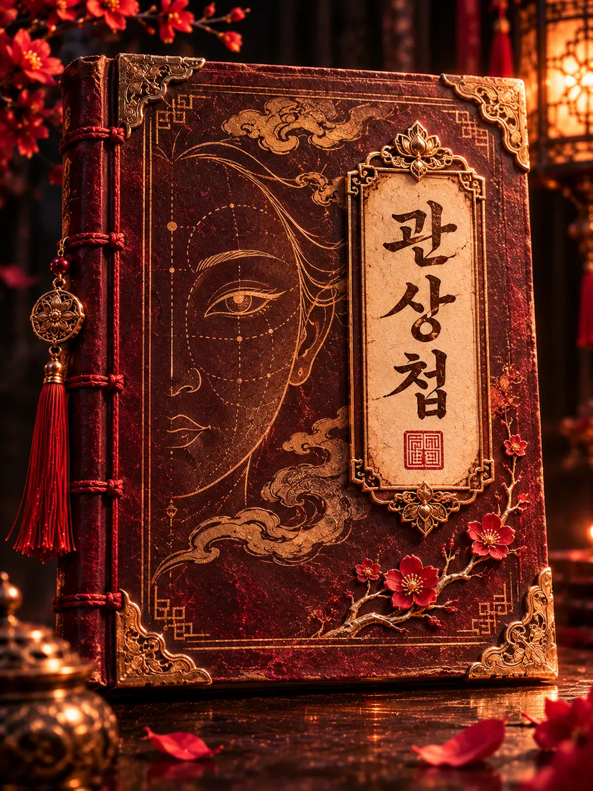

원안법사의 비밀 관상소
얼굴에는 자네가
살아온 흔적이
남아 있지.
얼굴 사진 한 장이면 됩니다 · 사진은 기기 밖으로 나가지 않습니다
원안법사 圓安法師
어서 오시게. 거울 앞에 앉아 보시게나.
나는 원광법사께 상(相) 보는 법을 배운 사람일세. 자네 얼굴에 새겨진 이야기를 하나씩 읽어드리지.
- 一얼굴에서 백 가지 자리를 자로 재어, 자네 얼굴에 실제로 선 것만 짚습니다. 누구에게나 맞는 말은 적지 않습니다.
- 二오행형상·삼정·십이궁·유년운기 — 옛 관상서가 보던 자리를 그대로 봅니다.
- 三열 장의 관상첩 가운데 두 장을 먼저 열어 드립니다. 읽어 보시고 정하시면 됩니다.
원안법사의 관상첩
얼굴에 새겨진
열 가지 이야기
- 一내 타고난 얼굴오행형상·삼정·타고난 결무료
- 二재물의 자리들어오는 길·새는 자리·돈이 드나드는 때무료
- 三인연과 사람맞는 사람·피할 사람·배우자궁
- 四사회적 인상과 평판첫인상·관록궁·이마 세 칸
- 五세월이 남긴 흔적유년운기로 지나온 때와 올 때
- 六강점과 주의할 점살릴 자리 셋, 지킬 자리 둘
- 七얼굴 십이궁열두 자리 전부와 자리마다 선 백귀
- 八얼굴에 깃든 백귀가장 세게 선 셋, 복과 흉 두 얼굴
- 九원안법사의 처방점 찍을 자리·길한 색·머리
- 十마지막 밀서총평·할 일 셋·피할 것 둘·움직일 달
먼저 여쭙겠네
자네 나이와 성별을
알려 주시게.
얼굴은 나이마다 맡은 자리가 다릅니다. 유년운기부위(流年運氣部位)를 보려면
나이가 있어야 하고, 짝이 있는 여덟 자리는 남녀가 보는 쪽이 다릅니다.
성 별
남좌여우(男左女右) — 고르시면 어느 쪽을 보는지 말씀드리지요.
거울 앞에
자네의 얼굴을
비춰 보시게나.
거울을 누르면 사진첩이 열립니다. 정면으로, 이마부터 턱까지 들어온 사진이 가장 또렷합니다.
어떻게 찍으면 잘 보이나요
- 얼굴 전체가 들어오게 찍어 주세요. 이마부터 턱까지 다 보여야 삼정을 잽니다.
- 정면이 가장 좋습니다. 조금 기울어도 되돌려 읽습니다만, 정면이 더 또렷합니다.
- 앞머리로 이마를 덮지 마세요. 관록궁과 명궁이 가립니다.
- 모자와 선글라스는 벗어 주세요.
사진은 자네 기기 안에서만 처리됩니다. 서버로 보내지 않고 저장하지도 않습니다.
원안법사 圓安法師
얼굴을 고치고 오실 것 없네. 오늘 자네 얼굴 그대로가 읽을 것일세.
이제,
자네의 얼굴을 읽어보겠네.
얼굴의 기운을 살피는 중입니다…
원안법사가 읽은 것
자네 얼굴에서 — 자리가 섰네.

봉인된 관상첩을
열어보시겠나?
- 봉인된 여덟 장 전부
- 얼굴 십이궁 열두 자리와 자리마다 선 백귀
- 점 찍을 자리 · 길한 색 · 어울리는 머리
- 올해 할 일 셋, 피할 것 둘, 움직일 달
복채
봉인된 관상첩을
열어보시겠나?
보이지 않는 자리까지 살펴, 자네만의 관상첩 열 장을 끝까지 열어 드립니다.
관상첩 전체 열람
- 제3첩부터 제10첩까지 여덟 장 전부
- 얼굴 십이궁 열두 자리와 자리마다 선 백귀
- 점 찍을 자리 · 길한 색 · 어울리는 머리
- 올해 할 일 셋, 피할 것 둘, 움직일 달
- 다시 오시면 지난번과 견주어 드립니다
출시 기념가
한 번 내시면 이 기기에서 다시 받지 않습니다
열람을 시작하면 환불이 제한됩니다. 결제하시면 이용약관과 환불규정에 동의한 것으로 봅니다.
원안법사의 관상첩
자네 얼굴에 새겨진 열 가지 이야기
자네의 관상첩이 완성되었네.
얼굴에 새겨진 이야기를 모두 읽었습니다. 얼굴은 해마다 달라집니다. 반년쯤 뒤에 다시 오시면 어느 자리가 달라졌는지 짚어 드리지요.
이용약관
백귀관상은 관상 해석을 보여 주는 오락 서비스입니다. 해석 내용은 의료·법률·재무상의 조언이 아니며, 이를 근거로 한 판단의 책임은 이용자에게 있습니다.
복채를 내고 열람을 시작하면 환불이 제한됩니다. 결제 후 첩을 열기 전이라면 고객센터로 알려 주세요.
개인정보 처리방침
올리신 얼굴 사진은 이용자의 기기 안에서만 처리됩니다. 서버로 전송되지 않고 저장되지도 않습니다.
판정 결과만(사진 없이) 기기의 브라우저에 적어 두었다가, 다시 오셨을 때 지난번과 견주어 보여 드립니다. 브라우저 저장소를 비우면 함께 지워집니다.
사업자정보
상호 온미라이프 · 고객센터 1866-0423 · 전자우편 ja9746@naver.com
여덟 장이 봉인되어 있습니다복채 9,900원 · 한 번만